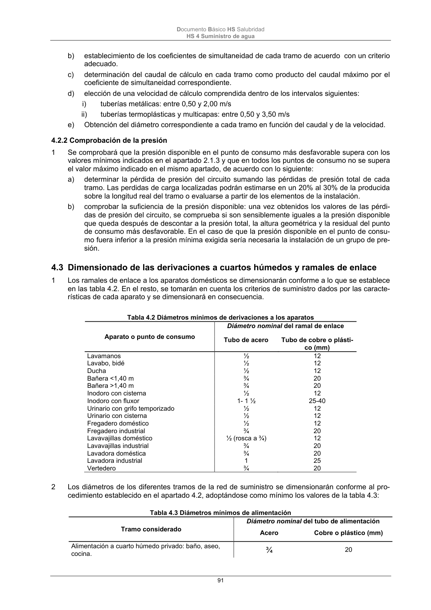

DB-HS · 4.3 Dimensionado de las derivaciones a cuartos húmedos y ramales de enlace · versión 2022-06-14 · capa oficial
Formatos: JSON compacto · Markdown · PDF fuente
Ámbito del documento · texto del ámbito · documento y tablas
ID técnico a0211 · PDF pág. 91-92 · jerarquía no validada por persona · contrastado con el literal de la página 91 (candidato tipográfico); no validado por persona · padre: raíz
4.3 Dimensionado de las derivaciones a cuartos húmedos y ramales de enlace 1 Los ramales de enlace a los aparatos domésticos se dimensionarán conforme a lo que se establece en las tabla 4.2. En el resto, se tomarán en cuenta los criterios de suministro dados por las caracte- rísticas de cada aparato y se dimensionará en consecuencia. Tabla 4.2 Diámetros mínimos de derivaciones a los aparatos Aparato o punto de consumo Diámetro nominal del ramal de enlace Tubo de acero Tubo de cobre o plásti- co (mm) Lavamanos ½ 12 Lavabo, bidé ½ 12 Ducha ½ 12 Bañera <1,40 m ¾ 20 Bañera >1,40 m ¾ 20 Inodoro con cisterna ½ 12 Inodoro con fluxor 1- 1 ½ 25-40 Urinario con grifo temporizado ½ 12 Urinario con cisterna ½ 12 Fregadero doméstico ½ 12 Fregadero industrial ¾ 20 Lavavajillas doméstico ½ (rosca a ¾) 12 Lavavajillas industrial ¾ 20 Lavadora doméstica ¾ 20 Lavadora industrial 1 25 Vertedero ¾ 20 2 Los diámetros de los diferentes tramos de la red de suministro se dimensionarán conforme al pro- cedimiento establecido en el apartado 4.2, adoptándose como mínimo los valores de la tabla 4.3: Tabla 4.3 Diámetros mínimos de alimentación Tramo considerado Diámetro nominal del tubo de alimentación Acero Cobre o plástico (mm) Alimentación a cuarto húmedo privado: baño, aseo, cocina. ¾ 20 Documento Básico HS Salubridad HS 4 Suministro de agua 92 Alimentación a derivación particular: vivienda, aparta- mento, local comercial ¾ 20 Columna (montante o descendente) ¾ 20 Distribuidor principal 1 25 Alimentación equipos de climatización < 50 kW ½ 12 50 - 250 kW ¾ 20 250 - 500 kW 1 25 > 500 kW 1 ¼ 32

PDF fuente redistribuible: copia fiel enlazada en esta página (SHA256 verificado).